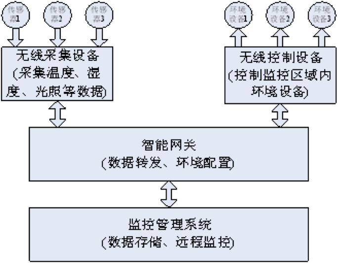
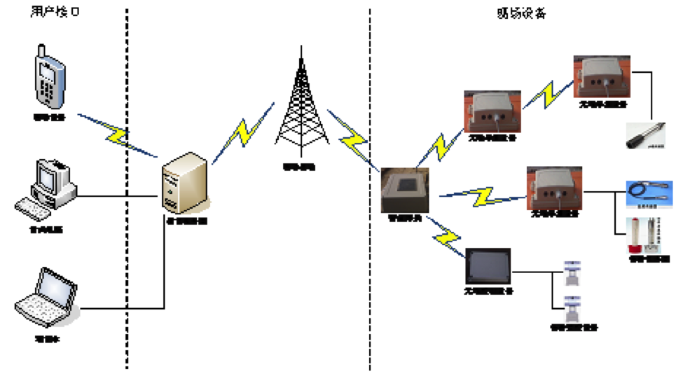

智能环境监控方案，主要由传感器、多功能采集器、控制器、智能网关等设备及后台环境监控管理系统组成。安装在现场的传感器可自动采集环境参数（如：空气温湿度、光照等），多功能采集器通过无线自组织网络将环境采集数据和设备状态数据汇集到智能 网关。智能网关安装有独立的应用软件，该应用软件可以实时查看当前现场环境情况；可以配置客户端，实现无线采集设备节点的自由配置；也可以直接设置智能网 关相应的工作参数。同时，智能网关根据多功能采集器获取的环境数据以及用户配置的相关阀值，通过控制器连接配电柜，进而控制现场设备。 智能网关通过3G/GPRS网络（或以太网）将采集数据上传至远程服务器，在服务器端进行数据存储、图形化显示、数据挖掘分析，用户可以远程监控被测区域 的环境情况，并结合相应的专家系统辅助决策。另外，通过远程服务器的环境监控管理系统还可以直接设置智能网关参数，控制相关网络设备，使用户有多重环境监 控操作接口。
方案采用无线传感器技术、以太网技术实现无线自组织网络，部署在现场的多功能采集器、控制器和智能网关通过无线自组织网络进行数据传输。智能网关与后台环境监控管理系统通过3G/GPRS网络（或以太网）进行数据传输。
（1）莲雾环境监控解决方案的整体结构如下图所示:

（2）莲雾环境监控解决方案的部署结构如下图所示：

*设备多功能化：智能网关除具备通信功能外，还具有可独立运行的应用软件；多功能采集器除具备数据采集功能外，还可通过配置实现中继功能；
*网络流量小：按照1个智能网关、50个无线采集设备、每个采集设备挂载5路传感器计算，一个月流量约为50M；
*方案实施灵活：设备间的通信主要依靠无线数据传输，不需要在具体的生产环境中进行布线，能随时调整设备安装位置，提高了方案实施的灵活性；
*监控方式多样化：为用户提供不同的使用接口，用户可以现场通过智能网关应用软件调节设备，也可以通过后台环境监控管理系统进行调节；
*抗干扰性强：采用Zigbee协议实现无线自组织网络，提高了设备信号的抗干扰性，能适应潮湿环境和电网波动；
*实时性强：对采集设备进行周期性的数据反馈，保证智能网关与服务器上的数据为最新的数据，提高了实时性。
环境监控解决方案是物联网技术在环境监控领域中的一个应用，可以根据不同的行业客户需求进行定制设计。本解决方案可广泛应用于生产车间、农业科研温室、大型农业示范园、食品加工、冷链运输、污水处理、海洋渔业等涉及环境监控的行业和企业。